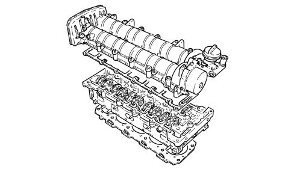

INTRODUCTION - CYLINDER HEAD(S)
- Path
- Descriptions > 10 ENGINE > 1016 CYLINDER HEAD/S > 1016E CYLINDER HEAD/S - VARIOUS OPERATIONS > INTRODUCTION - CYLINDER HEAD(S)
- Kind
- system description
- Applies to
- engines: 2.4 JTD 20v; all production periods
- Interactive page
- https://sloeber94.github.io/elrnDB-aBrrSpdr/en/#/946003054
Applies to: engines: 2.4 JTD 20v; all production periods
The cylinder head is a one-piece cylinder head in aluminium alloy and silicone.
Two, ductile cast iron, overhead camshafts in a camshaft housing; they are operated by a belt and gears.
The four valves per cylinder, parallel and vertical, are positioned in the valve guides and are controlled by rocker arms operated by the camshaft cams and kept in contact with the valves through hydraulic tappets.
The valve guides are an interference fit in the cylinder head seats. A special reamer is used to produce the correct inner diameter after fitting.
Unlike cylinder heads with prechamber, the entire combustion process takes place in the combustion chamber on the piston.
The gasket between cylinder head and crankcase is metal and the head does not require retightening throughout the life of the engine.
